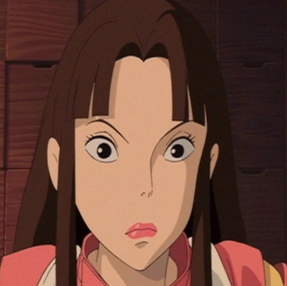

Elenco
Elenco de A Viagem de Chihiro
Tópicos
- Personagems Principais
- Chihiro Ogino
- Haku
- No-Face (Kaonashi)
- Yubaba
- Personagems Secundários
- Lin (Rin)
- Zeniba
- Boh
- Kamaji
- Retornar a página principal
Personagems Pricipais e suas vozes japonesas
- Todos os Personagens desta lista
- Chihiro Ogino
- Haku
- No-Face (Kaonashi)
- Yubaba
Chihiro Ogino - Rumi Hiiragi
Género: Feminino
Idade: 10
Haku - Miyu Irino
Género: Masculino
Idade: 10
No-Face (Kaonashi) - Akio Nakamura
Género: Masculino
Idade: ???
Yubaba - Mari Natsuki
Género: Feminino
Idade: ???
Personagems Secundários e suas vozes japonesas
- Todos os Personagems desta lista
- Lin (Rin)
- Zeniba
- Boh
- Kamaji

Lin (Rin) - Yumi Tamai
Género: Feminino
Idade: 19
Zeniba - Mari Natsuki
Género: Feminino
Idade: ???
Boh - Ryūnosuke Kamiki
Género: Masculino
Idade: ???
Kamaji - Sugawara Bunta
Género: Masculino
Idade: 40+
Confira também as Cocepts Arts desse filme
voltar ao topo